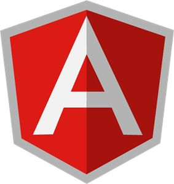
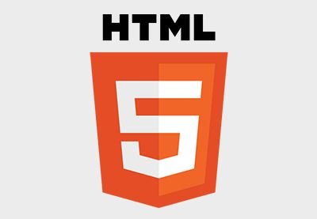
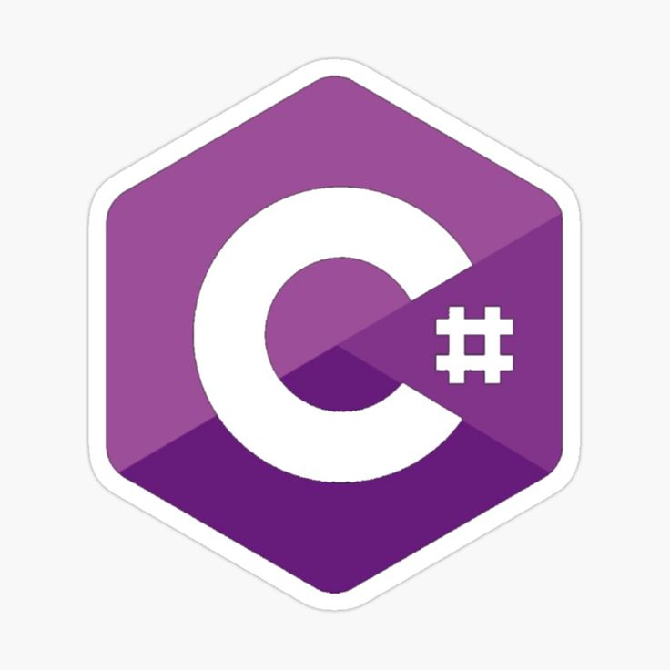
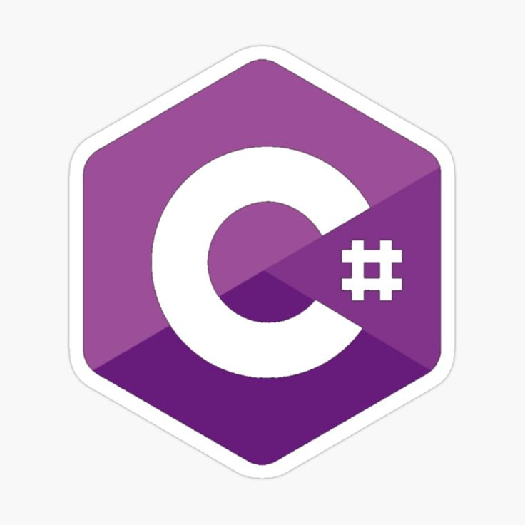
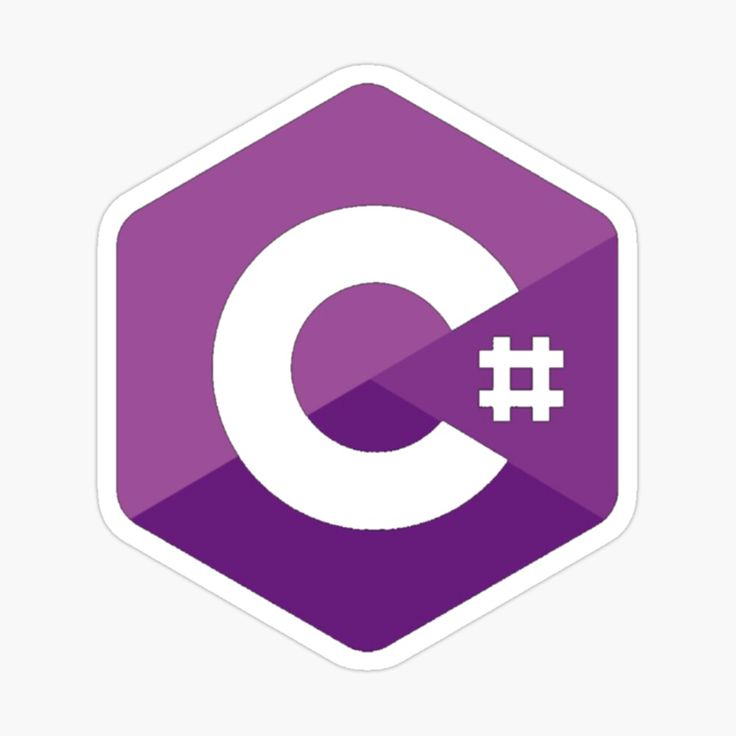

 


My journey into the world of programming began during my academic years, and since then, I've been on a continuous learning path, staying updated with the latest technologies and trends in the web development landscape.
I aimed at being an innovated individual who enjoys computers and coding. Calm, rational and logical approach to situations and challenges. Currently studying Bachlor of Computer Science and Information Technology in Application Development and graduate in Higher Certificate in IT at Varsity College. Knowledgeable and skillfull in Java, C#, SQL Databse, Oracle and Microsoft Azure.